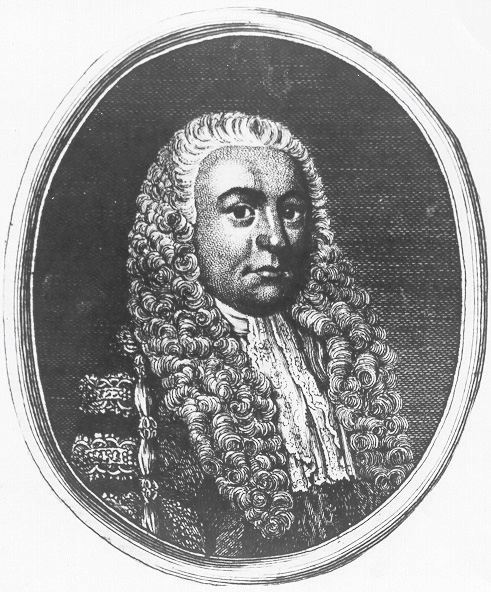

Consider a freight train moving at a constant speed of 30 miles per hour. The equation that expresses the distance traveled at that speed in terms of time is given by

After 1 hour the train has traveled 30 miles, after 2 hours the train has traveled 60 miles, and so on. We can construct a chart and graph this relation.

In this example, we can see that the distance varies over time as the product of the constant rate, 30 miles per hour, and the variable, t. This relationship is described as direct variationDescribes two quantities x and y that are constant multiples of each other: . and 30 is called the variation constant. In addition, if we divide both sides of by t we have

In this form, it is reasonable to say that D is proportional to t, where 30 is the constant of proportionality. In general, we have
| Key words | Translation |
|---|---|
“y varies directly as x” |
|
“y is directly proportionalUsed when referring to direct variation. to x” |
|
“y is proportional to x” |
Here k is nonzero and is called the constant of variationThe nonzero multiple k, when quantities vary directly or inversely. or the constant of proportionalityUsed when referring to the constant of variation..
Example 1: The circumference of a circle is directly proportional to its diameter, and the constant of proportionality is . If the circumference is measured to be 20 inches, then what is the radius of the circle?
Solution:
Use the fact that “the circumference is directly proportional to the diameter” to write an equation that relates the two variables.

We are given that “the constant of proportionality is ,” or . Therefore, we write

Now use this formula to find d when the circumference is 20 inches.
The radius of the circle, r, is one-half of its diameter.
Answer: The radius is inches, or approximately 3.18 inches.
Typically, we will not be given the constant of variation. Instead, we will be given information from which it can be determined.
Example 2: An object’s weight on earth varies directly to its weight on the moon. If a man weighs 180 pounds on earth, then he will weigh 30 pounds on the moon. Set up an algebraic equation that expresses the weight on earth in terms of the weight on the moon and use it to determine the weight of a woman on the moon if she weighs 120 pounds on earth.
Solution:
We are given that the “weight on earth varies directly to the weight on the moon.”
To find the constant of variation k, use the given information. A 180-pound man on earth weighs 30 pounds on the moon, or when .

Solve for k.
Next, set up a formula that models the given information.
This implies that a person’s weight on earth is 6 times her weight on the moon. To answer the question, use the woman’s weight on earth, , and solve for x.

Answer: The woman weighs 20 pounds on the moon.
Next, consider the relationship between time and rate,

If we wish to travel a fixed distance, then we can determine the average speed required to travel that distance in a given amount of time. For example, if we wish to drive 240 miles in 4 hours, we can determine the required average speed as follows:
The average speed required to drive 240 miles in 4 hours is 60 miles per hour. If we wish to drive the 240 miles in 5 hours, then determine the required speed using a similar equation:

In this case, we would only have to average 48 miles per hour. We can make a chart and view this relationship on a graph.


This is an example of an inverse relationship. We say that r is inversely proportional to the time t, where 240 is the constant of proportionality. In general, we have
| Key words | Translation |
|---|---|
“y varies inverselyDescribes two quantities x and y, where one variable is directly proportional to the reciprocal of the other: as x” |
|
“y is inversely proportionalUsed when referring to inverse variation. to x” |
Again, k is nonzero and is called the constant of variation or the constant of proportionality.
Example 3: If y varies inversely as x and when , then find the constant of proportionality and an equation that relates the two variables.
Solution: If we let k represent the constant of proportionality, then the statement “y varies inversely as x” can be written as follows:
Use the given information, when , to find k.
Solve for k.

Therefore, the formula that models the problem is
Answer: The constant of proportionality is 10, and the equation is .
Example 4: The weight of an object varies inversely as the square of its distance from the center of earth. If an object weighs 100 pounds on the surface of earth (approximately 4,000 miles from the center), then how much will it weigh at 1,000 miles above earth’s surface?
Solution:
Since “w varies inversely as the square of d,” we can write

Use the given information to find k. An object weighs 100 pounds on the surface of earth, approximately 4,000 miles from the center. In other words, w = 100 when d = 4,000:

Solve for k.

Therefore, we can model the problem with the following formula:

To use the formula to find the weight, we need the distance from the center of earth. Since the object is 1,000 miles above the surface, find the distance from the center of earth by adding 4,000 miles:
To answer the question, use the formula with d = 5,000.

Answer: The object will weigh 64 pounds at a distance 1,000 miles above the surface of earth.
Lastly, we define relationships between multiple variables. In general, we have
| Vocabulary | Translation |
|---|---|
“y varies jointlyDescribes a quantity y that varies directly as the product of two other quantities x and z: . as x and z” |
|
“y is jointly proportionalUsed when referring to joint variation. to x and z” |
Here k is nonzero and is called the constant of variation or the constant of proportionality.
Example 5: The area of an ellipse varies jointly as a, half of the ellipse’s major axis, and b, half of the ellipse’s minor axis. If the area of an ellipse is , where and , then what is the constant of proportionality? Give a formula for the area of an ellipse.

Solution: If we let A represent the area of an ellipse, then we can use the statement “area varies jointly as a and b” to write
To find the constant of variation, k, use the fact that the area is when and .

Therefore, the formula for the area of an ellipse is

Answer: The constant of proportionality is , and the formula for the area is .
Try this! Given that y varies directly as the square of x and inversely to z, where y = 2 when x = 3 and z = 27, find y when x = 2 and z = 16.
Answer: 3/2
Part A: Variation Problems
Translate the following sentences into a mathematical formula.
1. The distance, D, an automobile can travel is directly proportional to the time, t, that it travels at a constant speed.
2. The extension of a hanging spring, d, is directly proportional to the weight, w, attached to it.
3. An automobile’s breaking distance, d, is directly proportional to the square of the automobile’s speed, v.
4. The volume, V, of a sphere varies directly as the cube of its radius, r.
5. The volume, V, of a given mass of gas is inversely proportional to the pressure, p, exerted on it.
6. The intensity, I, of light from a light source is inversely proportional to the square of the distance, d, from the source.
7. Every particle of matter in the universe attracts every other particle with a force, F, that is directly proportional to the product of the masses, and , of the particles and inversely proportional to the square of the distance, d, between them.
8. Simple interest, I, is jointly proportional to the annual interest rate, r, and the time, t, in years a fixed amount of money is invested.
9. The period, T, of a pendulum is directly proportional to the square root of its length, L.
10. The time, t, it takes an object to fall is directly proportional to the square root of the distance, d, it falls.
Construct a mathematical model given the following.
11. y varies directly as x, and y = 30 when x = 6.
12. y varies directly as x, and y = 52 when x = 4.
13. y is directly proportional to x, and y = 12 when x = 3.
14. y is directly proportional to x, and y = 120 when x = 20.
15. y varies directly as x, and y = 14 when x = 10.
16. y varies directly as x, and y = 2 when x = 8.
17. y varies inversely as x, and y = 5 when x = 7.
18. y varies inversely as x, and y = 12 when x = 2.
19. y is inversely proportional to x, and y = 3 when x = 9.
20. y is inversely proportional to x, and y = 21 when x = 3.
21. y varies inversely as x, and y = 2 when x = 1/8.
22. y varies inversely as x, and y = 3/2 when x = 1/9.
23. y varies jointly as x and z, where y = 8 when x = 4 and z = 1/2.
24. y varies jointly as x and z, where y = 24 when x = 1/3 and z = 9.
25. y is jointly proportional to x and z, where y = 2 when x = 1 and z = 3.
26. y is jointly proportional to x and z, where y = 15 when x = 3 and z = 7.
27. y varies jointly as x and z, where y = 2/3 when x = 1/2 and z = 12.
28. y varies jointly as x and z, where y = 5 when x = 3/2 and z = 2/9.
29. y varies directly as the square of x, where y = 45 when x = 3.
30. y varies directly as the square of x, where y = 3 when x = 1/2.
31. y is inversely proportional to the square of x, where y = 27 when x = 1/3.
32. y is inversely proportional to the square of x, where y = 9 when x = 2/3.
33. y varies jointly as x and the square of z, where y = 54 when x = 2 and z = 3.
34. y varies jointly as x and the square of z, where y = 6 when x = 1/4 and z = 2/3.
35. y varies jointly as x and z and inversely as the square of w, where y = 30 when x = 8, z = 3, and w = 2.
36. y varies jointly as x and z and inversely as the square of w, where y = 5 when x = 1, z = 3, and w = 1/2.
37. y varies directly as the square root of x and inversely as z, where y = 12 when x = 9 and z = 5.
38. y varies directly as the square root of x and inversely as the square of z, where y = 15 when x = 25 and z = 2.
39. y varies directly as the square of x and inversely as z and the square of w, where y = 14 when x = 4, w = 2, and z = 2.
40. y varies directly as the square root of x and inversely as z and the square of w, where y = 27 when x = 9, w = 1/2, and z = 4.
Part B: Variation Problems
Applications involving variation.
41. Revenue in dollars is directly proportional to the number of branded sweat shirts sold. If the revenue earned from selling 25 sweat shirts is $318.75, then determine the revenue if 30 sweat shirts are sold.
42. The sales tax on the purchase of a new car varies directly as the price of the car. If an $18,000 new car is purchased, then the sales tax is $1,350. How much sales tax is charged if the new car is priced at $22,000?
43. The price of a share of common stock in a company is directly proportional to the earnings per share (EPS) of the previous 12 months. If the price of a share of common stock in a company is $22.55 and the EPS is published to be $1.10, then determine the value of the stock if the EPS increases by $0.20.
44. The distance traveled on a road trip varies directly with the time spent on the road. If a 126-mile trip can be made in 3 hours, then what distance can be traveled in 4 hours?
45. The circumference of a circle is directly proportional to its radius. If the circumference of a circle with radius 7 centimeters is measured as centimeters, then find the constant of proportionality.
46. The area of circle varies directly as the square of its radius. If the area of a circle with radius 7 centimeters is determined to be square centimeters, then find the constant of proportionality.
47. The surface area of a sphere varies directly as the square of its radius. When the radius of a sphere measures 2 meters, the surface area measures square meters. Find the surface area of a sphere with radius 3 meters.
48. The volume of a sphere varies directly as the cube of its radius. When the radius of a sphere measures 3 meters, the volume is cubic meters. Find the volume of a sphere with radius 1 meter.
49. With a fixed height, the volume of a cone is directly proportional to the square of the radius at the base. When the radius at the base measures 10 centimeters, the volume is 200 cubic centimeters. Determine the volume of the cone if the radius of the base is halved.
50. The distance, d, an object in free fall drops varies directly with the square of the time, t, that it has been falling. If an object in free fall drops 36 feet in 1.5 seconds, then how far will it have fallen in 3 seconds?
Hooke’s law suggests that the extension of a hanging spring is directly proportional to the weight attached to it. The constant of variation is called the spring constant.
Figure 7.1 Robert Hooke (1635–1703)
51. If a hanging spring is stretched 5 inches when a 20‑pound weight is attached to it, then determine its spring constant.
52. If a hanging spring is stretched 3 centimeters when a 2-kilogram weight is attached to it, then determine the spring constant.
53. If a hanging spring is stretched 3 inches when a 2‑pound weight is attached, then how far will it stretch with a 5-pound weight attached?
54. If a hanging spring is stretched 6 centimeters when a 4-kilogram weight is attached to it, then how far will it stretch with a 2-kilogram weight attached?
The breaking distance of an automobile is directly proportional to the square of its speed.
55. If it takes 36 feet to stop a particular automobile moving at a speed of 30 miles per hour, then how much breaking distance is required if the speed is 35 miles per hour?
56. After an accident, it was determined that it took a driver 80 feet to stop his car. In an experiment under similar conditions, it takes 45 feet to stop the car moving at a speed of 30 miles per hour. Estimate how fast the driver was moving before the accident.
Boyle’s law states that if the temperature remains constant, the volume, V, of a given mass of gas is inversely proportional to the pressure, p, exerted on it.
Figure 7.2 Robert Boyle (1627–1691)
Portrait of Robert Boyle, from http://commons.wikimedia.org/wiki/File:Robert_boyle.jpg.
57. A balloon is filled to a volume of 216 cubic inches on a diving boat under 1 atmosphere of pressure. If the balloon is taken underwater approximately 33 feet, where the pressure measures 2 atmospheres, then what is the volume of the balloon?
58. If a balloon is filled to 216 cubic inches under a pressure of 3 atmospheres at a depth of 66 feet, then what would the volume be at the surface, where the pressure is 1 atmosphere?
59. To balance a seesaw, the distance from the fulcrum that a person must sit is inversely proportional to his weight. If a 72-pound boy is sitting 3 feet from the fulcrum, then how far from the fulcrum must a 54-pound boy sit to balance the seesaw?
60. The current, I, in an electrical conductor is inversely proportional to its resistance, R. If the current is 1/4 ampere when the resistance is 100 ohms, then what is the current when the resistance is 150 ohms?
61. The number of men, represented by y, needed to lay a cobblestone driveway is directly proportional to the area, A, of the driveway and inversely proportional to the amount of time, t, allowed to complete the job. Typically, 3 men can lay 1,200 square feet of cobblestone in 4 hours. How many men will be required to lay 2,400 square feet of cobblestone given 6 hours?
62. The volume of a right circular cylinder varies jointly as the square of its radius and its height. A right circular cylinder with a 3-centimeter radius and a height of 4 centimeters has a volume of cubic centimeters. Find a formula for the volume of a right circular cylinder in terms of its radius and height.
63. The period, T, of a pendulum is directly proportional to the square root of its length, L. If the length of a pendulum is 1 meter, then the period is approximately 2 seconds. Approximate the period of a pendulum that is 0.5 meter in length.
64. The time, t, it takes an object to fall is directly proportional to the square root of the distance, d, it falls. An object dropped from 4 feet will take 1/2 second to hit the ground. How long will it take an object dropped from 16 feet to hit the ground?
Newton’s universal law of gravitation states that every particle of matter in the universe attracts every other particle with a force, F, that is directly proportional to the product of the masses, and , of the particles and inversely proportional to the square of the distance, d, between them. The constant of proportionality is called the gravitational constant.
Figure 7.3 Sir Isaac Newton (1643–1724)

Source: Portrait of Isaac Newton by Sir Godfrey Kneller, from http://commons.wikimedia.org/wiki/File:GodfreyKneller-IsaacNewton-1689.jpg.
65. If two objects with masses 50 kilograms and 100 kilograms are 1/2 meter apart, then they produce approximately newtons (N) of force. Calculate the gravitational constant.
66. Use the gravitational constant from the previous exercise to write a formula that approximates the force, F, in newtons between two masses and , expressed in kilograms, given the distance d between them in meters.
67. Calculate the force in newtons between earth and the moon, given that the mass of the moon is approximately kilograms, the mass of earth is approximately kilograms, and the distance between them is on average meters.
68. Calculate the force in newtons between earth and the sun, given that the mass of the sun is approximately kilograms, the mass of earth is approximately kilograms, and the distance between them is on average meters.
69. If y varies directly as the square of x, then how does y change if x is doubled?
70. If y varies inversely as square of t, then how does y change if t is doubled?
71. If y varies directly as the square of x and inversely as the square of t, then how does y change if both x and t are doubled?
1:
3:
5:
7:
9:
11:
13:
15:
17:
19:
21:
23:
25:
27:
29:
31:
33:
35:
37:
39:
41: $382.50
43: $26.65
45:
47: square meters
49: 50 cubic centimeters
51: 1/4
53: 7.5 inches
55: 49 feet
57: 108 cubic inches
59: 4 feet
61: 4 men
63: 1.4 seconds
65:
67:
69: y changes by a factor of 4
71: y remains unchanged